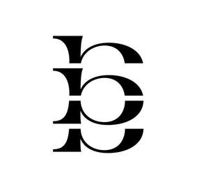

Trade Mark Journal No.2025/015 11 April 2025
UK00004179823 26 March 2025 (24,25,35)

International priority date claimed: 27 September 2024
(European Union Intellectual Property Office (EUIPO))
(019084965)
- Class 24
- Textiles and substitutes for textiles; Household linen; Curtains of textile or plastic; bath linen, except clothing; cotton fabrics; quilts; lingerie fabric; bedsheets; elastic woven, fabrics; gauze [cloth]; jersey [fabric]; bed linen; serviettes of textile; face towels of textile; tulle; knitted fabric; calico; fabrics for textile use; diaper changing cloths for babies; baby buntings; muslin fabric; yoga blankets; yoga towels.
- Class 25
- Clothing; footwear; headwear; Footwear; caps being headwear; hosiery; braces [suspenders] for clothing; underclothing; tights; sweat-absorbent underclothing; corselets; ready-made clothing; pants (Am.); outerclothing; knitwear [clothing]; skirts; layettes [clothing]; pajamas; dresses; bodies [underclothing]; tee-shirts; knickers; sports singlets.
- Class 35
- Retail and wholesale services for clothing; Retail and wholesale services for textiles; business management assistance; import-export agency services; commercial information agency services; accounting; business management and organization consultancy; direct mail advertising; advertising; television advertising; advertising agency services; organization of exhibitions for commercial or advertising purposes; sales promotion for others; presentation of goods on communication media, for retail purposes; commercial administration of the licensing of the goods and services of others; marketing; telemarketing services; search engine optimisation for sales promotion; website traffic optimization; pay per click advertising; targeted marketing; outdoor advertising.
Cuiyong Liu
Representative: Potter Clarkson LLP